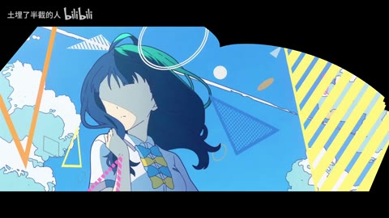
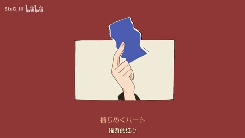

手法专题 / 规则、用途与取舍
几何拼贴与形状语言
用少量形状、方向和重复建立性格，让图形与人物一起表达轻盈、秩序或紧张。
什么时候使用
青春、角色介绍、音乐视觉、活动包装、清楚的图形风格。
什么时候应该减掉
形状种类与颜色都无限增加；图形仅为填空；不顾人物视线与轮廓。
制作步骤
①限定两主色和三形状；②找人物的视线/动作轴；③图形分别承担框定、引导或遮挡；④调整面积与留白；⑤再加运动。
直出条件
规则图形易；完整人物拼贴需要透明分层。
基础机制已做13项原创演示，不等于本页所有复杂组合均已成片验证。
原机制演示 →把方法放回画面

H43 / 85—94秒
Emotional numbness【情绪解离】【静止系mad】【风华回战2025】
竖幅人物后转黑底几何块，再转粉彩气球与双人漫画；92.04反色仍是同主构图。
迁移提问：去掉人物后，几何元素还剩什么功能？加回人物后，哪一层负责引导视线？

AI07 / 4—12秒
〖开源“手书”〗洛琪希的魔术之心/トリックハート
红底米色不规则画框内人物表情和手部道具变化，随后两个人物全身像与竖排字条同框。
迁移提问：去掉人物后，几何元素还剩什么功能？加回人物后，哪一层负责引导视线？

AI09 / 4—12秒
〖GPT-6Astra“手”书〗Time is mine (A-SOUL.ver)
暗底人物前后是大号浅字；手电对应黄色三角光区，人物脸与身体受遮罩局部照亮。
迁移提问：去掉人物后，几何元素还剩什么功能？加回人物后，哪一层负责引导视线？
完成一次约束练习
给同一人物做三张黑白构图，确认焦点后才上色。
交付时保留基础版与加效果版，并写“增加了什么意义、损失了什么清晰度”。
使用观察与复盘表 →